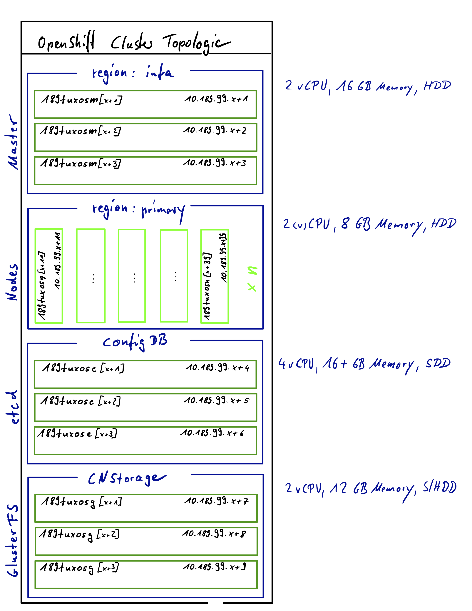
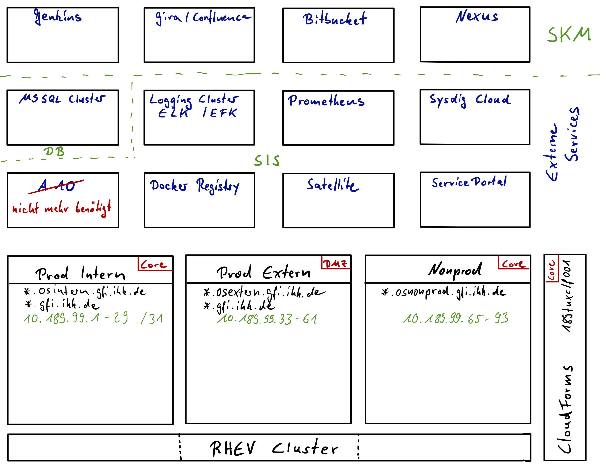
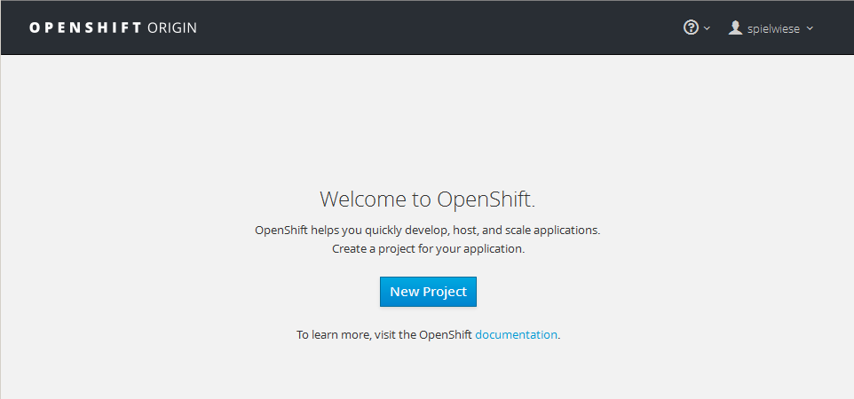

OpenShift Allgemein
Diese Anleitung soll dabei helfen die gängigsten Arbeitsschritte des Admins eines OpenShift Clusters zu erläutern.
Architektur Anmelden am Openshift Cluster Projekt erstellen Applikation erstellen Installation einer MongoDB via Template Installation einer Python Applikation via S2I Builder Image Installation einer Applikation via Docker Build Strategie SSH Schlüssel hinterlegen Webhooks konfigurieren
Architektur
| Entwicklung | Test | Produktion | DMZ | |
|---|---|---|---|---|
| API URL | https://openshift-nonprod.gfi.ihk.de:8443 | https://openshift-test.gfi.ihk.de:8443 | https://openshift-intern.gfi.ihk.de:8443 | https://openshift-extern.gfi.ihk.de:8443 |
| CloudForms | 189tuxclf001 | 189tuxclf001 | 189tuxclf001 | 189tuxclf001 |
| OpenShift Master | 189tuxosm001 189tuxosm002 189tuxosm003 |
189tuxosm101 189tuxosm102 189tuxosm103 |
189tuxosm201 189tuxosm202 189tuxosm203 |
189tuxosm301 189tuxosm302 189tuxosm303 |
| Application Nodes | 189tuxosn001 189tuxosn002 ... 189tuxosn099 |
189tuxosn101 189tuxosn102 ... 189tuxosn199 |
189tuxosn201 189tuxosn202 ... 189tuxosn299 |
189tuxosn301 189tuxosn302 ... 189tuxosn399 |
| etcd Knoten | 189tuxose001 189tuxose002 189tuxose003 |
189tuxose101 189tuxose102 189tuxose103 |
189tuxose201 189tuxose202 189tuxose203 |
189tuxose301 189tuxose302 189tuxose303 |
| Container Native Storage |
189tuxoss001 189tuxoss002 189tuxoss003 |
189tuxoss101 189tuxoss102 189tuxoss103 |
189tuxoss201 189tuxoss202 189tuxoss203 |
189tuxoss301 189tuxoss302 189tuxoss303 |
| NFS Server | 189tuxnfs001 | 189tuxnfs101 | 189tuxnfs201 | 189tuxnfs301 |
| Git Repository | https://bitbucket.gfi.ihk.de | https://bitbucket.gfi.ihk.de | https://bitbucket.gfi.ihk.de | https://bitbucket.gfi.ihk.de |
Ein OpenShift Cluster besteht aus mehreren Systemen: drei OpenShift Mastern, einem 3-Node etcd Cluster, der als Konfigurationsdatenbank dient,
drei Container Native Storage Nodes (GlusterFS), mindestens drei Application Nodes sowie einem dedizierten NFS Server.
Alle Systeme sind virtuelle Maschinen auf Basis der RedHat Enterprise Virtualisierung.
Administrative Tätigkeiten am Cluster können von den Mastern aus durchgeführt werden. Der dortige root User verfügt über cluster:admin Berechtigung.
Auf den Application Nodes laufen die eigentlichen Docker Container, die von Google Kubernetes orchestriert werden. Auf diesem Kubernetes Framework setzt OpenShift wiederum auf.
Zwischen den Systemen spannt der Kubernetes ein virtuelles Netzwerk über das die Pods (die kleinste von Kubernetes verwaltete Einheit, bestehend aus
üblicherweise einem, im Ausnahmefall aber auch aus mehreren Containern) intern kommunizieren.
Die Container Native Storage Nodes stellen dem Cluster hochverfügbare persistente Volumes auf Basis des GlusterFS bereit, während der NFS Server storage für
bereit stellt, der nicht hochverfügbar sein muss.
Kein direkter Bestandteil des OpenShift Clusters, aber dennoch für die Arbeit mit diesem unerlässlich ist ein git Repository auf dem die Quellcodes
für die Anwendungen die auf dem Cluster laufen sollen und die für einen Docker Build nötigen Dockerfiles.

Geplant sind aktuell 4 voneinander getrennte OpenShift Cluster:
- NonProd beherbergt die ENTW, FREI und SQA Umgebungen
- Test dient dem Infrastrukturbetrieb zum Testen von Upgrades, Changes etc.
- Prod Intern beherbergt die PILOT und die Produktionsumgebung, die nur im Kammernetz erreichbar sein soll
- Prod Extern beherbergt die Produktionsumgebung in der DMZ, die im Internet erreichbar sein soll
In der folgenden Illustration sind die externen Services aufgeführt mit denen der OpenShift kommuniziert.

Objekte im OpenShift
Eine Applikation im OpenShift Cluster besteht aus mehreren Objekten unterschiedlichen Typs, die erst im Zusammenspiel eine funktionsfähige Applikation ergeben. Die meistgenutzten Objekttypen sind:
Container
Eine Definition wie man einen oder mehrere Prozesse in einer portablen, Linux-basierten Umgebung ausführen kann. Container werden aus einem Image heraus erzeugt und sind von anderen Containern auf dem gleichen System isoliert.
Image
Ein geschichtetes Linux Dateisystem auf dem sich der Applikationscode, notwendige Abhängigkeiten und Betriebssystembibliotheken befinden. Ein Image wird anhand eines Namens identifiziert, der entweder nur im lokalen Cluster bekannt ist oder aber auf eine extern Docker Registry verweist.
Pods [pod]
Ein oder mehrere Container die gemeinsam auf einen Host deployed werden und sich dort die IP-Adresse und den persistenten Storage miteinander teilt. In den Pods werden die Sicherheitseinstellungen und Laufzeitparameter für jeden Container definiert.
Labels
Labels sind einfache Schlüssel/Wert-Paare die jeder Ressource zwecks Identifikation, Gruppierung und Selektion zugewiesen werden können.
Häufig nutzen Ressourcen dieses Verfahren um andere Ressourcen auszuwählen. Labels erleichtern die Verwaltung der Ressourcen deutlich, so
versieht das oc new-app --name=<appname> <repository> Kommando jede Ressource die es erzeugt mit einem Label app=<appname>,
so dass weitere Kommandos wie z.B. oc get pods -l app=<appname> oder oc delete all -l app=<appname> diese Labels
nutzen können.
Volumes
Container sind von Natur aus nicht persistent; jeder Neustart findet auf einem frischen System statt. Volumes sind gemountete Dateisysteme, die den Pods und deren
Containern zur Verfügung gestellt werden und im Hintergrund von einer Anzahl an Hostinternen oder NAS Endpunkten realisiert werden kann.
Der einfachste Volume Typ ist das EmptyDir bei dem es sich um ein temporäres Verzeichnis auf dem lokalen Host handelt. Der Administrator kann aber erlauben, dass
persistente Volumes angefordert werden dürfen die dann automatisch an die Pods gehängt werden.
Nodes [node]
Maschinen, die im Cluster dafür vorgesehen sind die laufenden Container zu beheimaten. Als regulärer Benutzer hat man nur indirekt mit diesen zu tun.
Services [svc]
Ein Name der eine bestimmte Menge von Pods oder externen Servern repräsentiert die von anderen Pods genutzt werden. Der Service bekommt eine eigene IP Adresse und einen DNS Eintrag und kann nach aussen mit Hilfe einer Route exponiert werden. Ausserdem ermöglicht ein Service den einfachen Zugriff auf die darunter befindlichen Dienste dadurch, dass in jeden Pod eine Environment Variable mit dem Namen <SERVICE>_HOST injiziert wird.
Routes [route]
Bei einer Route handelt es sich um einen externen DNS Eintrag, der dazu dient eine interne Service Ressource ausserhalb des Clusters sichtbar zu machen. In unserem Cluster erfüllen HAProxy Container auf jedem Node diesen Zweck.
Replication Controllers [rc]
Ein Replication Controller kontrolliert, dass immer eine festgelegte Anzahl an Pods läft. Diese Anzahl wird in einem Template festgelegt, ebenso welche Pods anhand eines festzulegenden Labels der Kontrolle dieses Replication Controllers unterliegen. Werden Pods gelöscht, z.B. weil der Node auf dem der Pod lief abstürzte, erstellt der Replication Controller eine frische Kopie des Pods. Üblicherweise repräsentiert ein Replication Controller ein einzelnes Deployment eines Teils der Anwendung basierend auf einem Image.
Deployment Configuration [dc]
Definiert die Vorlage für einen Pod und managed das Deployment neuer Images oder Änderungen an der Konfiguration wenn diese auftauchen.
Eine einzelne DeploymentConfig entspricht zumeist einem einzelnen MicroService und unterstützt eine Vielzahl von Deployment Strategien, unter anderem
den vollständigen Restart, konfigurierbare Rolling Upgrades, eigene Implementationen sowie pre- und posthooks.
Jedes Deployment in OpenShift wird durch einen Replication Controller repräsentiert.
Build Configuration [bc]
Eine Beschreibung wie man den Source Code baut und aus diesen und einem Basisimage ein lauffähiges Applikationsimage erzeugt - der primär verwendeten Methode um Änderungen an der Applikation vorzunehmen. Builds können entweder Quellcodebasierts sein und Builder Images für gebrächliche Sprachen wie z.B. Java, PHP, Ruby oder Python nutzen, oder aber dockerbasiert sein und das neue Image anhand der Anweisungen in einem Dockerfile erzeugen. Jeder BuildConfig verfügt über Webhooks und kann bei Änderungen an Quellcode oder Basis Image automatisch benachrichtigt werden.
Builds [build]
Builds erzeugen ein neues Image aus dem Quellcode, anderen Images, Dockerfiles oder binärem Input. Ein Build läuft in einem Container und unterliegt damit den gleichen Beschränkungen wie anderen Pods. Ein Build resultiert üblicherweise in einem Image welches abschliessend in die Docker Registry hochgeladen wird kann aber genauso gut stattdessen post-build Tests anstossen, die nicht in einem Upload des Images resultieren.
Image Streams und ImageStreamTags [is,istag]
Analog zu einem Branch in einem Quellcode Repository gruppiert ein ImageStream zusammengehörende Images mit Hilfe von Tags in einen ImageStream. Jeder ImageStream hat ein oder mehrere Tags (default: latest) die entweder auf eine externe Docker Registry, andere Tags im gleichen ImageStream oder direkt auf bekannte Images verweisen kann. Darüber hinaus können images über die interne Docker Registry direkt in einen ImageStreamTag gepusht werden.
Secrets [secret]
Ein Secret kann geheime Text- oder Binärdaten enthalten, die an die eigenen Pods zugestellt werden. Standardmässig beinhaltet jeder Pod ein einzelnes Secret welches einen Token enthält mit dessen Hilfe man eingeschränkten Zugriff auf die API unter /var/run/secrets/kubernetes.io/serviceaccount hat. Man kann aber jederzeit neue Secrets erzeugen und in seinen Pods verfügbar machen oder Secrets aus Builds referenzieren (um sich mit Remote Servern zu verbinden) oder aber um mit deren Hilfe entfernte Images in einen ImageStream zu importieren.
Projects [project]
Alle oben beschriebenen Ressourcen existieren im Rahmen eines Projektes. Projekte verfügen über eine Liste von Mitgliedern und ihren Rollen, wie z.B. viewer, editor oder admin, einem Set von Sicherheitskontrollen auf die laufenden Pods und Beschränkungen hinsichtlich der zur Verfügung stehenden Ressourcen (CPU, Memory, etc.). Die Namen der Ressourcen müssen innerhalb eines Projektes eindeutig sein. Benutzer können Projekte hinzufügen, hinsichtlich der Ressourcen die dem Projekt zur Verfügung gestellt werden hat aber der Admin das letzte Wort.
OpenShift Client
Der OpenShift Cluster kann zum grossen Teil mit Hilfe der WebGUI konfiguriert werden, über die volle Bandbreite der Funktionalität verfügt man aber nur mit dem Kommandozeilen Client oc. Arbeitet man als Benutzer in seinem Projekt sollte die Anmeldung wie unten beschrieben von der eigenen Workstation aus mit dem AD Benutzer erfolgen, für administrative Aufgaben dient der root account auf den Mastern, der über volle cluster:admin Rechte verfügt. Dazu steht nebem dem oc Kommando noch das oadm bereit, welches im Grund aber nur ein Alias für oc adm darstellt.
Das oc Kommando hat eine Onlinehilfe integriert, die für jede Funktion aufgerufen werden kann, z.B.:
Wenn notwendige Argumente fehlen gibt er eine Auswahl der Möglichkeiten zurück
root@189tuxosm001:~> oc get
You must specify the type of resource to get. Valid resource types include:
* all
* buildconfigs (aka 'bc')
* builds
* certificatesigningrequests (aka 'csr')
* clusterrolebindings
* clusterroles
* clusters (valid only for federation apiservers)
* componentstatuses (aka 'cs')
* configmaps (aka 'cm')
* controllerrevisions
* cronjobs
* daemonsets (aka 'ds')
* deployments (aka 'deploy')
* deploymentconfigs (aka 'dc')
* endpoints (aka 'ep')
* events (aka 'ev')
* horizontalpodautoscalers (aka 'hpa')
* imagestreamimages (aka 'isimage')
* imagestreams (aka 'is')
* imagestreamtags (aka 'istag')
* ingresses (aka 'ing')
* groups
* jobs
* limitranges (aka 'limits')
* namespaces (aka 'ns')
* networkpolicies (aka 'netpol')
* nodes (aka 'no')
* persistentvolumeclaims (aka 'pvc')
* persistentvolumes (aka 'pv')
* poddisruptionbudgets (aka 'pdb')
* podpreset
* pods (aka 'po')
* podsecuritypolicies (aka 'psp')
* podtemplates
* policies
* projects
* replicasets (aka 'rs')
* replicationcontrollers (aka 'rc')
* resourcequotas (aka 'quota')
* rolebindings
* roles
* routes
* secrets
* serviceaccounts (aka 'sa')
* services (aka 'svc')
* statefulsets
* users
* storageclasses
* thirdpartyresources
error: Required resource not specified.
Use "oc explain " for a detailed description of that resource (e.g. oc explain pods).
See 'oc get -h' for help and examples. Hilfe explizit anfragen liefert Parameter und Einsatzbeispiele
root@189tuxosm001:~> oc help get
Display one or many resources
Possible resources include builds, buildConfigs, services, pods, etc. To see a list of common resources, use 'oc get'.
Some resources may omit advanced details that you can see with '-o wide'. If you want an even more detailed view, use
'oc describe'.
Usage:
oc get
[(-o|--output=)json|yaml|wide|custom-columns=...|custom-columns-file=...|go-template=...|go-template-file=...|jsonpath=...|jsonpath-file=...]
(TYPE [NAME | -l label] | TYPE/NAME ...) [flags] [options]
Examples:
# List all pods in ps output format.
oc get pods
# List a single replication controller with specified ID in ps output format.
oc get rc redis
# List all pods and show more details about them.
oc get -o wide pods
# List a single pod in JSON output format.
oc get -o json pod redis-pod
# Return only the status value of the specified pod.
oc get -o template pod redis-pod --template={{.currentState.status}}
Options:
--all-namespaces=false: If present, list the requested object(s) across all namespaces. Namespace in current
context is ignored even if specified with --namespace.
--allow-missing-template-keys=true: If true, ignore any errors in templates when a field or map key is missing in
the template. Only applies to golang and jsonpath output formats.
--experimental-use-openapi-print-columns=false: If true, use x-kubernetes-print-column metadata (if present) from
openapi schema for displaying a resource.
--export=false: If true, use 'export' for the resources. Exported resources are stripped of cluster-specific
information.
-f, --filename=[]: Filename, directory, or URL to files identifying the resource to get from a server.
--ignore-not-found=false: Treat "resource not found" as a successful retrieval.
--include-extended-apis=true: If true, include definitions of new APIs via calls to the API server. [default true]
-L, --label-columns=[]: Accepts a comma separated list of labels that are going to be presented as columns. Names are
case-sensitive. You can also use multiple flag options like -L label1 -L label2...
--no-headers=false: When using the default or custom-column output format, don't print headers (default print
headers).
-o, --output='': Output format. One of:
json|yaml|wide|name|custom-columns=...|custom-columns-file=...|go-template=...|go-template-file=...|jsonpath=...|jsonpath-file=...
See custom columns [http://kubernetes.io/docs/user-guide/kubectl-overview/#custom-columns], golang template
[http://golang.org/pkg/text/template/#pkg-overview] and jsonpath template
[http://kubernetes.io/docs/user-guide/jsonpath].
--raw='': Raw URI to request from the server. Uses the transport specified by the kubeconfig file.
-R, --recursive=false: Process the directory used in -f, --filename recursively. Useful when you want to manage
related manifests organized within the same directory.
--schema-cache-dir='~/.kube/schema': If non-empty, load/store cached API schemas in this directory, default is
'$HOME/.kube/schema'
-l, --selector='': Selector (label query) to filter on, supports '=', '==', and '!='.
-a, --show-all=true: When printing, show all resources (false means hide terminated pods.)
--show-kind=false: If present, list the resource type for the requested object(s).
--show-labels=false: When printing, show all labels as the last column (default hide labels column)
--sort-by='': If non-empty, sort list types using this field specification. The field specification is expressed
as a JSONPath expression (e.g. '{.metadata.name}'). The field in the API resource specified by this JSONPath expression
must be an integer or a string.
--template='': Template string or path to template file to use when -o=go-template, -o=go-template-file. The
template format is golang templates [http://golang.org/pkg/text/template/#pkg-overview].
-w, --watch=false: After listing/getting the requested object, watch for changes.
--watch-only=false: Watch for changes to the requested object(s), without listing/getting first.
Use "oc options" for a list of global command-line options (applies to all commands).Mit der explain Funktion Ressourcen oder Einträge der yaml Config erklären lassen
root@189tuxosm001:~> oc explain configmaps
DESCRIPTION:
ConfigMap holds configuration data for pods to consume.
FIELDS:
data <object>
Data contains the configuration data. Each key must be a valid
DNS_SUBDOMAIN with an optional leading dot.
kind <string>
Kind is a string value representing the REST resource this object
represents. Servers may infer this from the endpoint the client submits
requests to. Cannot be updated. In CamelCase. More info:
http://releases.k8s.io/HEAD/docs/devel/api-conventions.md#types-kinds
metadata <object>
Standard object's metadata. More info:
http://releases.k8s.io/HEAD/docs/devel/api-conventions.md#metadata
apiVersion <string>
APIVersion defines the versioned schema of this representation of an
object. Servers should convert recognized schemas to the latest internal
value, and may reject unrecognized values. More info:
http://releases.k8s.io/HEAD/docs/devel/api-conventions.md#resources
root@189tuxosm001:~> cat elpdj_001_entw_jast_log-pvc.yaml
apiVersion: v1
kind: PersistentVolumeClaim
metadata:
name: elpdj-001-entw-jast-log
spec:
accessModes:
- ReadWriteMany
resources:
requests:
storage: 2Gi
root@189tuxosm001:~> oc explain pvc.spec.resources.requests.storage
FIELD: requests <object>
DESCRIPTION:
Requests describes the minimum amount of compute resources required. If
Requests is omitted for a container, it defaults to Limits if that is
explicitly specified, otherwise to an implementation-defined value. More
info: http://kubernetes.io/docs/user-guide/compute-resources/Images in bestehenden Imagestream kopieren
root@189tuxosm001:~> oc import-image linux-prod-openshift-docker-swagger-ui:v3.11.0 --from=189tuxsat001.gfi.ihk.de:5000/linux-prod-openshift-docker-swagger-ui:v3.11.0
The import completed successfully.
Name: linux-prod-openshift-docker-swagger-ui
Namespace: swagger-ui
Created: 3 weeks ago
Labels: app=swagger-ui
Annotations: openshift.io/generated-by=OpenShiftNewApp
openshift.io/image.dockerRepositoryCheck=2018-03-21T12:16:11Z
Docker Pull Spec: 172.30.242.73:5000/swagger-ui/linux-prod-openshift-docker-swagger-ui
Image Lookup: local=false
Unique Images: 2
Tags: 3
latest
tagged from 189tuxsat001.gfi.ihk.de:5000/linux-prod-openshift-docker-swagger-ui
will use insecure HTTPS or HTTP connections
* 189tuxsat001.gfi.ihk.de:5000/linux-prod-openshift-docker-swagger-ui@sha256:d887cdc87d2e918363a767a5f696687f4bd0cf94e2a4ce6603aead04d1dd8c27
3 weeks ago
v3.11
tagged from 189tuxsat001.gfi.ihk.de:5000/linux-prod-openshift-docker-swagger-ui:v3.11.0
* 189tuxsat001.gfi.ihk.de:5000/linux-prod-openshift-docker-swagger-ui@sha256:772f49a83afd845243c056fa6751382e530c45ffa4d991c068626816f87a4e76
59 seconds ago
v3.11.0
tagged from 189tuxsat001.gfi.ihk.de:5000/linux-prod-openshift-docker-swagger-ui:v3.11.0
* 189tuxsat001.gfi.ihk.de:5000/linux-prod-openshift-docker-swagger-ui@sha256:772f49a83afd845243c056fa6751382e530c45ffa4d991c068626816f87a4e76
Less than a second ago
Image Name: linux-prod-openshift-docker-swagger-ui:v3.11.0
Docker Image: 189tuxsat001.gfi.ihk.de:5000/linux-prod-openshift-docker-swagger-ui@sha256:772f49a83afd845243c056fa6751382e530c45ffa4d991c068626816f87a4e76
Name: sha256:772f49a83afd845243c056fa6751382e530c45ffa4d991c068626816f87a4e76
Created: Less than a second ago
Image Size: 7.842 MB (first layer 1.97 MB, last binary layer 959 B)
Image Created: 3 weeks ago
Author: fehguy
Arch: amd64
Command: sh /usr/share/nginx/docker-run.sh
Working Dir: <none>
User: <none>
Exposes Ports: 8080/tcp
Docker Labels: <none>
Environment: PATH=/usr/local/sbin:/usr/local/bin:/usr/sbin:/usr/bin:/sbin:/bin
VERSION=v2.2.10
FOLDER=swagger-ui-2.2.10
API_URL=http://petstore.swagger.io/v2/swagger.json
API_URLS=
API_KEY=**None**
OAUTH_CLIENT_ID=**None**
OAUTH_CLIENT_SECRET=**None**
OAUTH_REALM=**None**
OAUTH_APP_NAME=**None**
OAUTH_ADDITIONAL_PARAMS=**None**
SWAGGER_JSON=/app/swagger.json
PORT=8080
BASE_URL=
Anmelden am OpenShift Cluster
- Die Anmeldung erfolgt entweder über einen Webbrowser oder mit dem
oc login
- Die nötige URL ist entweder https://openshift-intern.gfi.ihk.de:8443 für die Testumgebung oder https://openshift-nonprod.gfi.ihk.de:8443
- Jedes Projekt hat einen Projektbenutzer unter dem vom Projektverantwortlichen das eigentliche Projekt angelegt und Zugriffsrechte für personalisierte Benutzeraccounts verwaltet werden.
- Jeder Benutzer sollte über einen persönlichen Account (z.B. mleimenmeier für Michael Leimenmeier) verfügen, mit dem er sich wie in Punkt 5 dargestellt anmelden kann.
-
oc login [-u username] [-p password] https://openshift-nonprod.gfi.ihk.de:8443
07:57:10 leimm@189tuxlem001:workbench> oc login -u spielwiese https://openshift-nonprod.gfi.ihk.de:8443
Authentication required for https://openshift-nonprod.gfi.ihk.de:8443 (openshift)
Username: spielwiese
Password:
Login successful.
You don't have any projects. You can try to create a new project, by running
$ oc new-project <projectname>
